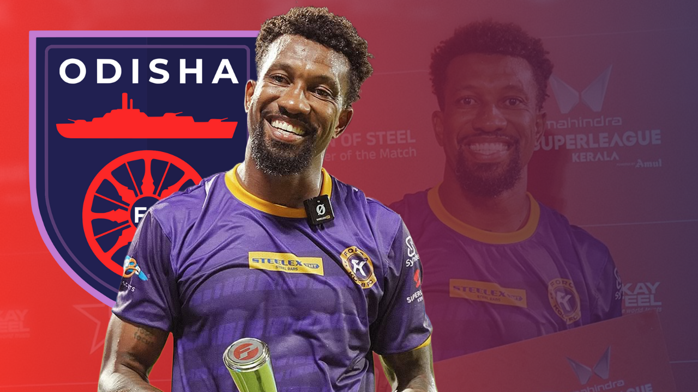

Odisha FC sign Dorielton Gomes
Odisha FC has signed Brazilian striker Dorielton as a replacement for the injured Roy Krishna. According to Marcus Mergulaho, the move is contingent upon medical clearance, although the paperwork has been finished. In the following days, it is also anticipated that the striker will join the team and begin training.
Odisha was dealt a huge blow when Roy Krishna sustained an ACL (Grade 3) injury against Hyderabad FC on November 25. Due to the injury, the Fijian striker, who had three goals in nine games so far this season, will miss the entire campaign. Odisha, who is in need of a replacement, has opted for Dorielton Gomes.
Dorielton's career so far:

Dorielton most recently played for Forca Kochi FC in the Super League Kerala's first season. With seven goals and two assists in nine games, the 34-year-old Brazilian striker took home the Golden Boot and was instrumental in his team's march to the final game, even scoring in the final minutes in the final.
Previously, he played for a number of clubs, spending a significant amount of time in China. Dorielton has scored almost 60 goals in 200 games in the Chinese Super League and Chinese League One. He later moved to Bangladesh, where he represented Abahani Limited Dhaka and Basundhara Kings. In 41 games with Basundhara Kings, Dorielton had scored 43 goals under Oscar Bruzon, who is currently East Bengal's head coach. The striker even scored two goals in two games against Odisha FC.
Odisha's season so far

Odisha has been excellent in the last few games, steadily moving up the table despite a sluggish start to the season. With Mauricio already firing in all capacities and Isak and Jerry popping up with goals recently, Sergio Lobera would hope that the signing of Dorielton will help his team score more goals.